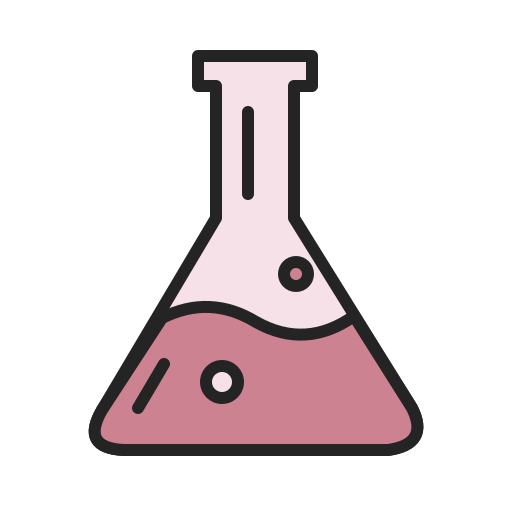

A smaller
first experiment
Learn from one observable behavior

Handdrawn Whiteboard Slides · Example
Learn from one observable behavior

Handdrawn Whiteboard Slides · Example
Choose one moment you can observe
Can someone find
the next step?
Build the smallest
path they can try.
Watch what they do.
Record what happened.
An illustrative workflow, with no measured results claimed

What did they try before asking?
Record the behavior before
interpreting the reason.

Change the part your observation
gave you a reason to change.
Then observe the same moment again.